Ekonomie#1
AI ilustrace (916)
Produkční náhled statických obrázků v rozměru mobilní karty.
Psychologie#2
Kolik lidí bylo ochotno ublížit cizinci jen na příkaz?
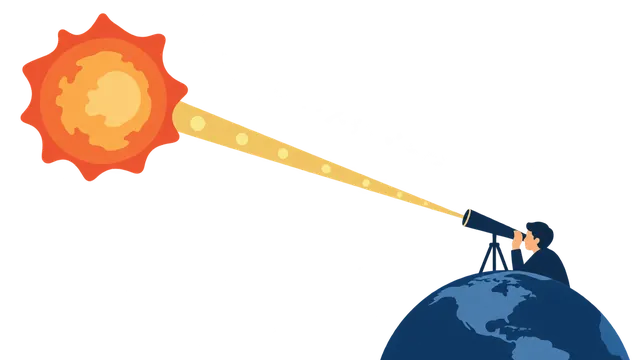
Astronomie#3
Hvězda, kterou vidíte dnes, možná už dávno nesvítí
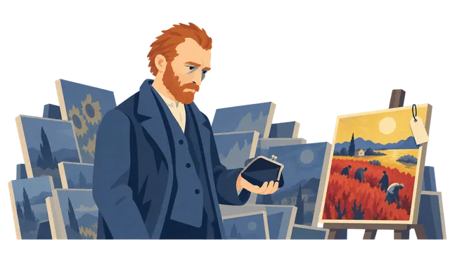
Umění#4
Malíř, který za života prodal jen jeden jediný obraz
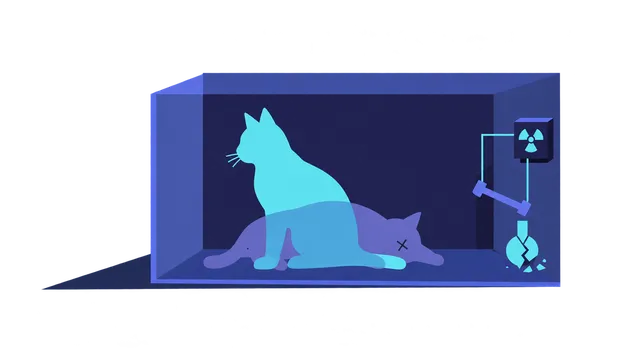
Fyzika a chemie#5
Kočka, která je zároveň mrtvá i živá
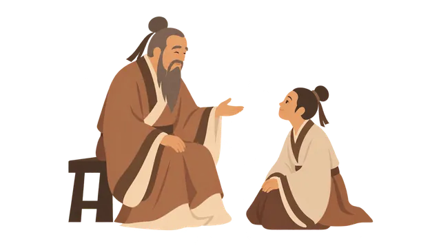
Filozofie#6
Zlaté pravidlo, které Konfucius formuloval dřív než Bible
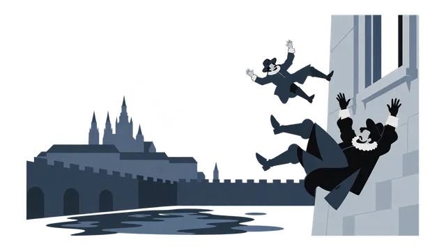
Historie#7
Ranní pád z okna, který rozpoutal třicetiletou válku
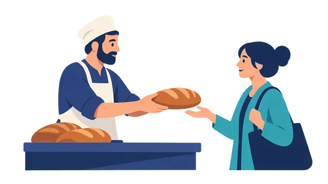
Ekonomie#8
Nevidiitelná ruka, která řídí trh bez příkazů

Psychologie#9
Proč lidé po nudné práci tvrdili, že byla zábavná
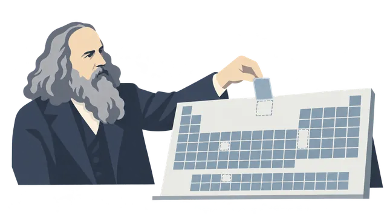
Fyzika a chemie#10
Tabulka prvků, kterou chemik uviděl ve snu

Umění#11
Obraz namalovaný za dvacet šest dní jako výkřik proti válce

Fyzika a chemie#12
Proč nikdy nezměříte přesně, kde částice je a jak rychle letí
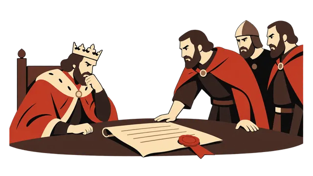
Společnost a politika#13
Listina, kterou král podepsal, aby si zachránil trůn
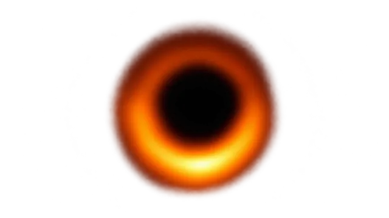
Astronomie#14
První fotografie něčeho, co pohltí i světlo

Literatura#15
Román, který mělo shořet a stal se klasikou

Filozofie#16
Pythagoras: číslo jako klíč k harmonii vesmíru
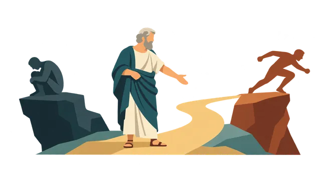
Filozofie#17
Aristotelova zlatá střední cesta ke šťastnému životu
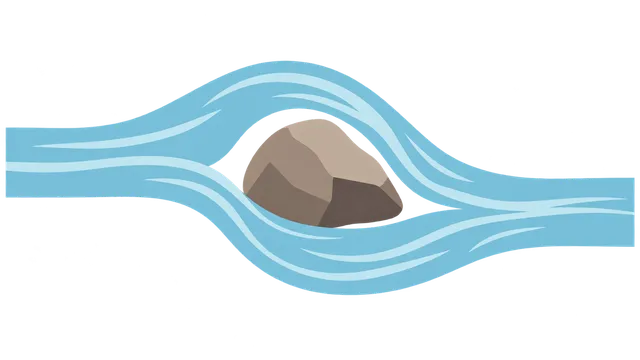
Filozofie#18
Lao-c' a umění nečinění, které toho nejvíc dokáže

Historie#19
Den, kdy padla tisíciletá říše za jediné ráno
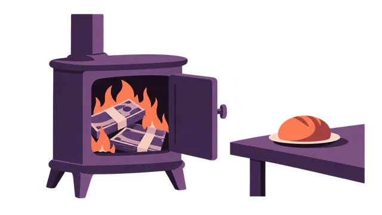
Ekonomie#20
Německo, kde bylo levnější spálit bankovku než koupit palivo
Psychologie#21
Proč nás první číslo, které uslyšíme, ovlivní víc než logika
Biologie#22
Snímek, který ukázal tvar dědičnosti, aniž by ho jeho autorka viděla dokončený
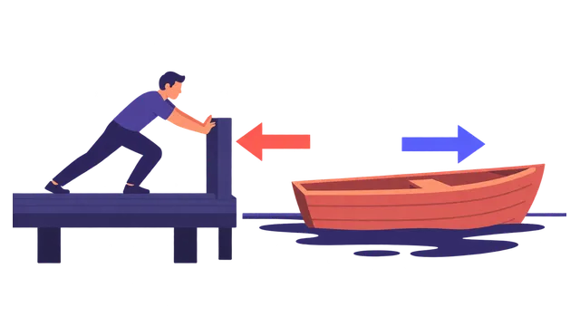
Fyzika a chemie#23
Proč vás loď při odrazu od mola tlačí zpátky
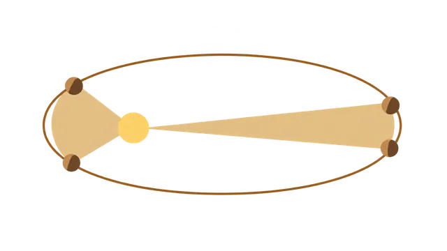
Astronomie#24
Planety nejezdí po kruzích, jak si tisíce let myslel celý svět

Literatura#25
Muž, který se probudil zatčen za zločin, jenž mu nikdo nikdy nevysvětlil
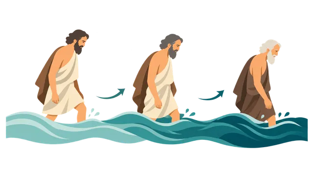
Filozofie#26
Herakleitos: proč nikdy nevstoupíme dvakrát do stejné řeky
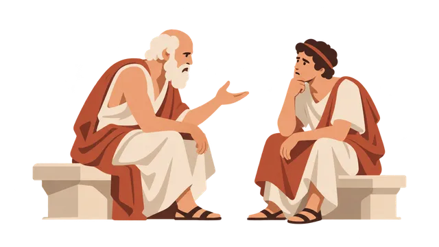
Filozofie#27
Sokrates: vím, že nic nevím, a proto jsem nejmoudřejší z Athéňanů

Filozofie#28
Buddha: proč je utrpení nevyhnutelnou součástí života a jak z něj ven

Historie#29
Rosettská deska: kámen, který rozluštil egyptské hieroglyfy
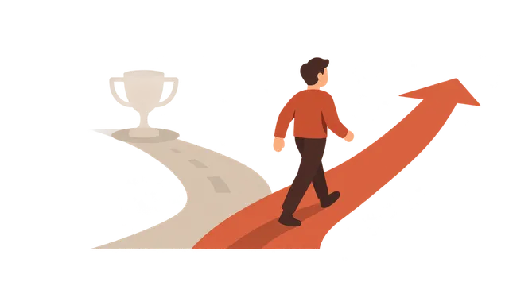
Ekonomie#30
Oportunitní náklady: cena toho, co jste nezvolili
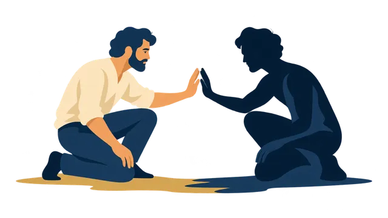
Psychologie#31
Stínový archetyp Carla Junga: temná stránka, kterou v sobě popíráme
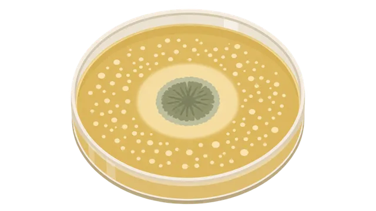
Biologie#32
Plíseň na zapomenuté Petriho misce, která zachránila miliony životů
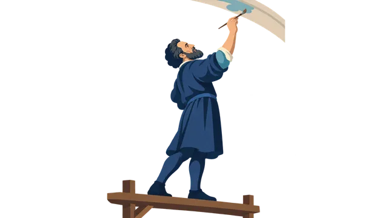
Umění#33
Michelangelo strávil čtyři roky malováním stropu, na který se nemohl dívat zpříma
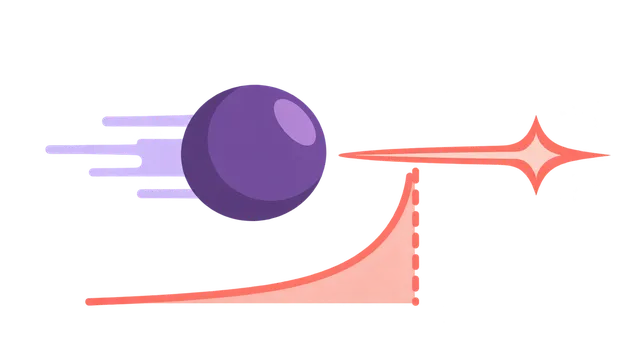
Fyzika a chemie#34
Proč nic ve vesmíru nemůže překonat rychlost světla
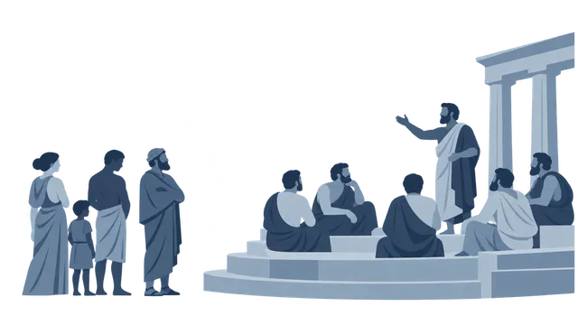
Společnost a politika#35
Athénská demokracie: vláda lidu, která vylučovala většinu obyvatel
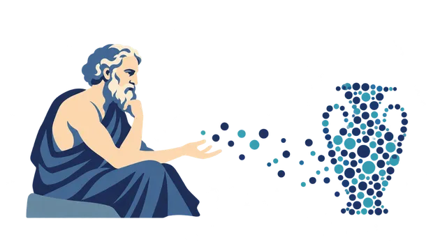
Filozofie#36
Démokritos a svět stavěný z nedělitelných částic
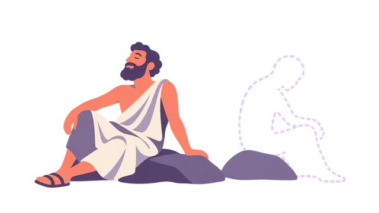
Filozofie#37
Epikúros: proč se nemá smysl bát smrti
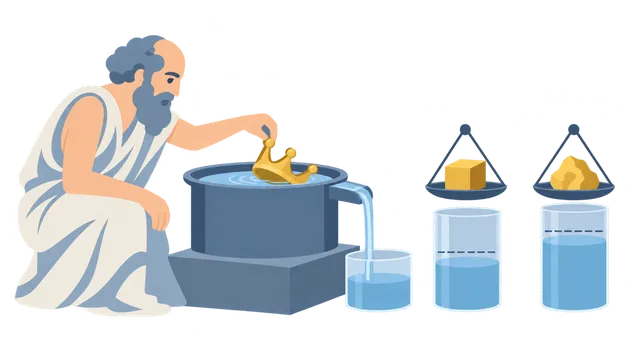
Fyzika a chemie#38
Archimédés ve vaně: jak objevil zákon vztlaku

Historie#39
Hrobka, kterou archeolog čekal roky a nakonec našel netknutou
Ekonomie#40
Keynes a myšlenka, že v krizi má stát utrácet víc
Psychologie#41
Proč hledáme jen důkazy, které potvrzují to, čemu už věříme
Fyzika a chemie#42
Chemik, který dal jméno plynu, co udržuje oheň hořet
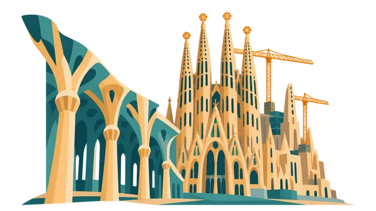
Umění#43
Katedrála, která se staví už přes sto čtyřicet let
Ke zjednodušení: příliš jemné detaily při 160×90 px. V produkčních kartách se nezobrazuje.
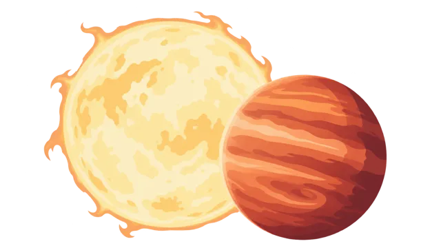
Astronomie#44
První planeta objevená u cizí hvězdy podobné Slunci
Literatura#45
Proces, který Kafka nedokončil a přesto změnil literaturu

Filozofie#46
Konfucius a otázka, co dělá člověka skutečně lidským
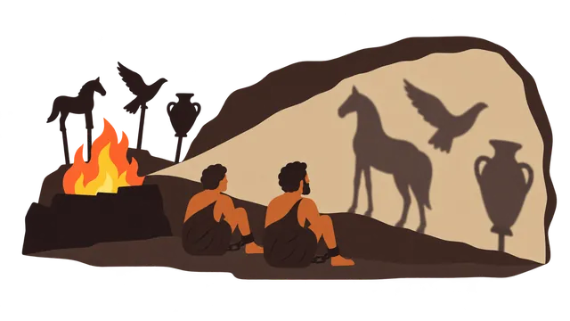
Filozofie#47
Platónova jeskyně: co když je celý náš svět jen stín
Filozofie#48
Seneca: víc trpíme ve fantazii než v realitě
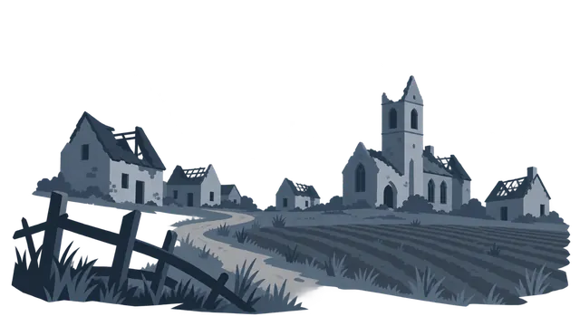
Historie#49
Mor, který za čtyři roky vylidnil polovinu Evropy

Ekonomie#50
Adam Smith a neviditelná ruka, která řídí trh bez příkazů

Psychologie#51
Milgramův experiment: jak snadno uposlechneme rozkaz ubližovat

Fyzika a chemie#52
Mendělejev nechal v tabulce prázdná místa pro prvky, které ještě nikdo neviděl
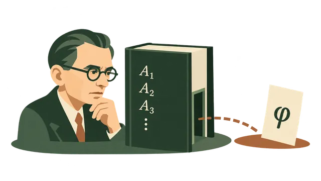
Matematika#53
Gödel dokázal, že matematika nikdy nemůže dokázat úplně vše
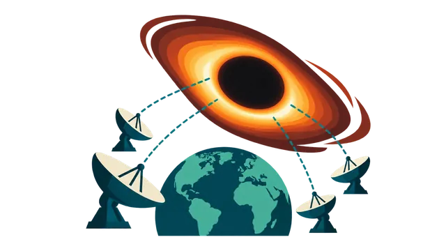
Astronomie#54
První fotografie objektu, ze kterého nemůže uniknout ani světlo
Technologie#55
Turingův test: jak poznat, že s vámi mluví stroj
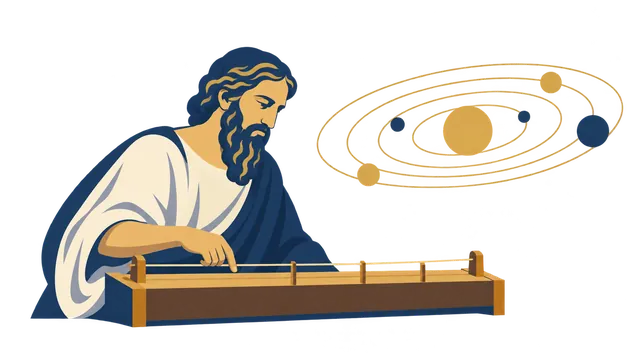
Filozofie#56
Pythagoras: vesmír jako hudba, kterou neslyšíme

Filozofie#57
Aristotelés a odvaha, která leží mezi dvěma zbabělostmi
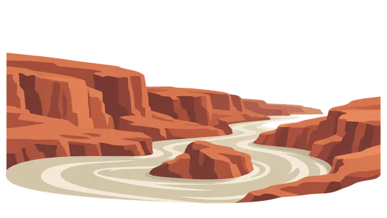
Filozofie#58
Lao-c' a umění, jak toho dosáhnout tím, že nic neděláte
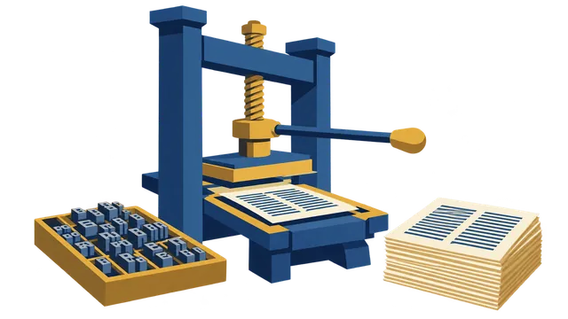
Historie#59
Gutenberg a vynález, který rozmnožil knihy jako nikdy dřív
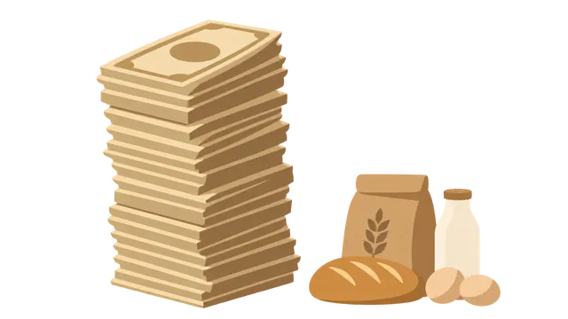
Ekonomie#60
Inflace: jev, který podle Friedmana vzniká vždy stejně
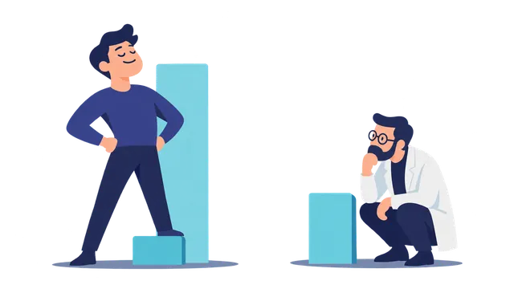
Psychologie#61
Dunning-Kruger efekt: proč nejméně schopní věří, že jsou nejlepší
Fyzika a chemie#62
Entropie: proč se rozbité vejce nikdy nesloží zpátky

Umění#63
Van Gogh prodal za života jediný obraz, dnes jsou jeho díla nedocenitelná
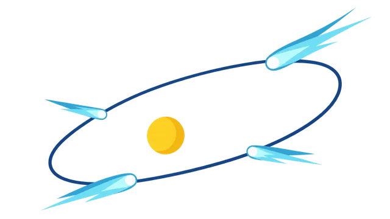
Astronomie#64
Halleyova kometa: první úspěšně předpovězený návrat z vesmíru
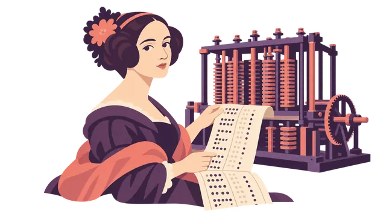
Technologie#65
Ada Lovelace psala programy pro stroj, který nikdy nebyl postaven
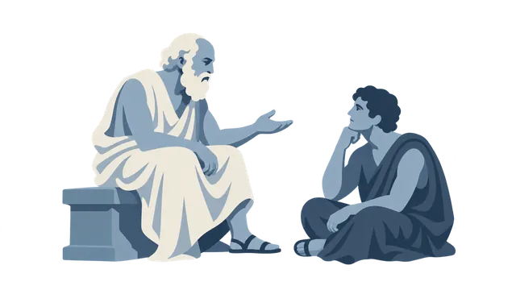
Filozofie#66
Sokrates a metoda, jak z lidí vytáhnout pravdu otázkami
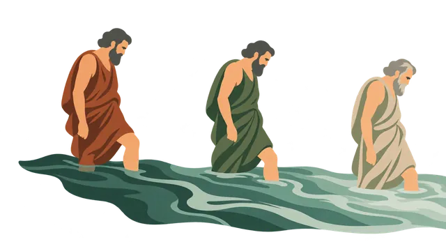
Filozofie#67
Hérakleitos: do stejné řeky nikdy nevstoupíš dvakrát

Filozofie#68
Buddha a čtyři pravdy, které mají vyléčit utrpení
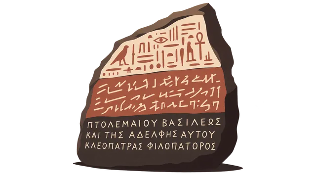
Historie#69
Kámen, díky kterému lidé po dvou tisíciletích rozluštili hieroglyfy
Ekonomie#70
Greshamův zákon: proč špatné peníze vyhánějí dobré z oběhu
Psychologie#71
Stanfordský vězeňský experiment: jak rychle se z obyčejných lidí stanou dozorci
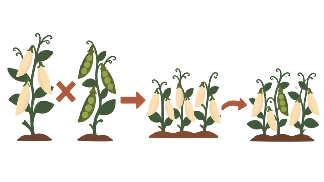
Biologie#72
Mendel a hrách, který odhalil zákony dědičnosti
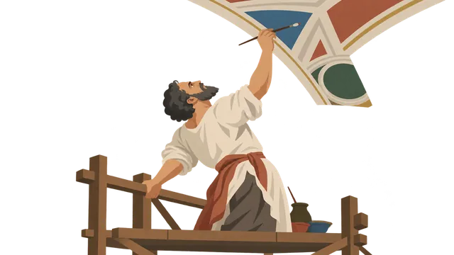
Umění#73
Michelangelo maloval strop Sixtinské kaple čtyři roky, aniž by byl malíř

Astronomie#74
Kepler zjistil, že planety létají po elipsách, ne po kruzích
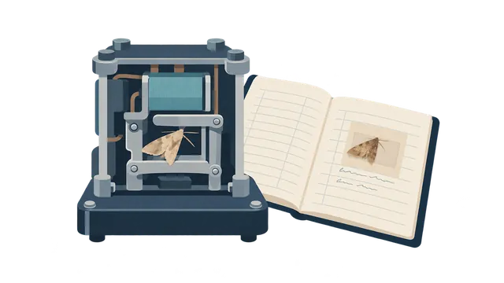
Technologie#75
Mol, který uvízl v počítači a dal jméno chybám v programech
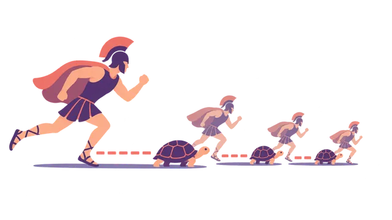
Filozofie#76
Zenónův paradox: proč Achilles nikdy nedostihne želvu
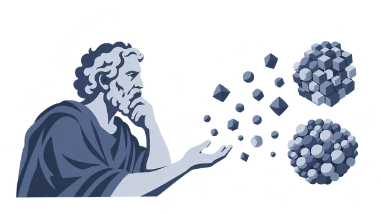
Filozofie#77
Démokritos: svět je jen atomy a prázdnota
Filozofie#78
Konfucius a pravidlo, které předběhlo křesťanskou etiku
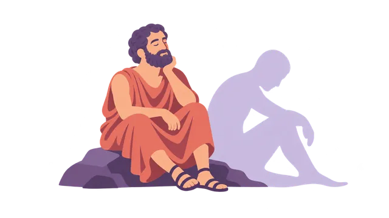
Filozofie#79
Epikúros: smrt se nás nikdy nedotkne
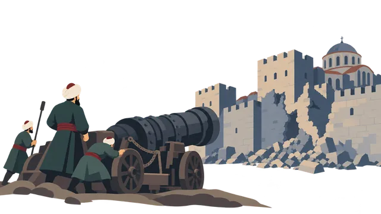
Historie#80
Rok 1453: den, kdy padla tisíciletá říše

Ekonomie#81
Paradox spoření: proč šetření může ekonomice ublížit
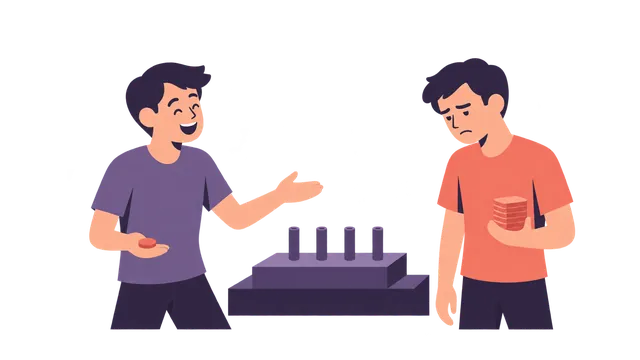
Psychologie#82
Kognitivní disonance: jak si mozek obhájí i vlastní omyl
Umění#83
Beethoven složil svou nejslavnější symfonii jako hluchý
Fyzika a chemie#84
Ole Rømer změřil rychlost světla pomocí měsíců Jupitera
Astronomie#85
Koperník postavil Slunce do středu vesmíru a čekal s vydáním knihy
Filozofie#86
Marcus Aurelius: císař, který si psal deník o vlastních slabostech
Filozofie#87
Diogenés a sud, ve kterém bydlel místo v domě
Filozofie#88
Aristotelés a zlatá střední cesta mezi extrémy
Filozofie#89
Pythagoras a myšlenka, že vesmír je postavený na číslech
Filozofie#90
Epiktetos: svoboda začíná tam, kde přestává naše moc
Historie#91
Černá smrt: pandemie, která vylidnila středověkou Evropu
Ekonomie#92
Komparativní výhoda: proč i slabší ekonomika vydělá na obchodu
Psychologie#93
Placebo efekt: jak víra v lék dokáže skutečně léčit
Umění#94
Guernica: Picassovo obžalování z hrůz bombardování
Fyzika a chemie#95
Heisenbergův princip neurčitosti: hranice, kterou nelze překonat
Astronomie#96
Černé díry: místa, kde se hroutí i samotný prostor
Technologie#97
Turingův test: může stroj předstírat, že je člověk?
Filozofie#98
Hérakleitos: řeka, do které nikdy nevstoupíš dvakrát
Filozofie#99
Lao-c' a umění nedělat nic navíc
Filozofie#100
Sokratova metoda: pravda se rodí z otázek, ne z odpovědí
Historie#101
Schliemann a poklad, který proměnil legendu ve skutečnost
Filozofie#102
Buddha a čtyři pravdy, které vysvětlují lidské utrpení
Filozofie#103
Seneca: čas je jediné bohatství, které nikdy nezískáme zpět
Historie#104
Rosettská deska: kámen, který rozluštil jazyk faraonů

Ekonomie#105
Neviditelná ruka trhu: Adam Smith a sobectví, které pomáhá všem

Psychologie#106
Milgramův experiment: jak snadno se lidé podřídí autoritě

Filozofie#107
Platónova jeskyně: proč většina lidí žije ve stínech

Filozofie#108
Démokritos: svět je jen tanec atomů v prázdnotě
Filozofie#109
Čuang-c' a sen, ve kterém neví, kdo je motýl a kdo člověk

Fyzika a chemie#110
Archimédés a vana, ze které vyskočil s výkřikem Heuréka
Historie#111
Howard Carter otevřel hrobku, kterou 3245 let nikdo nespatřil
Ekonomie#112
Tragédie společných zdrojů: proč nikdo neuklízí sdílenou pastvinu
Fyzika a chemie#113
Marie Curie: jediná osoba, která získala Nobelovu cenu ve dvou vědách
Fyzika a chemie#114
J. J. Thomson a objev elektronu, který rozbil nedělitelný atom
Astronomie#115
Apollo 11: den, kdy člověk poprvé vkročil na jiné těleso
Matematika#116
Fermatova poslední věta čekala na důkaz 358 let
Technologie#117
Tim Berners-Lee a vynález, který proměnil internet ve web
Ekonomie#118
Marshallův plán: americké miliardy, které obnovily poválečnou Evropu
Psychologie#119
Pavlovův pes: jak slina prozradila mechanismus učení
Umění#120
Krádež Mony Lisy, která ji proslavila po celém světě
Literatura#121
Don Quijote: rytíř, kterého historikové považují za první moderní román
Filozofie#122
Descartes a jediná jistota, kterou nešlo zpochybnit
Společnost a politika#123
Pád Bastily 1789: den, kdy začala Francouzská revoluce
Biologie#124
Proč med v archeologických nálezech vydržel tisíce let
Fyzika a chemie#125
Experiment, který nenašel neviditelný éter a změnil fyziku
Astronomie#126
Edwin Hubble a objev, že se vesmír neustále rozpíná
Historie#127
Kryštof Kolumbus a plavba, která omylem objevila nový kontinent
Ekonomie#128
Černý čtvrtek 1929: den, kdy se zhroutila newyorská burza
Psychologie#129
Malý Albert: experiment, který naučil dítě bát se chlupaté myši
Umění#130
Salvador Dalí a hodiny, které se rozplývají jako sýr
Literatura#131
1984: román, který napsal umírající muž jako varování
Filozofie#132
Nietzsche a věta „Bůh je mrtev“, kterou svět nepochopil
Matematika#133
Eukleidovy Základy: učebnice geometrie platná dva tisíce let
Technologie#134
Alan Turing a stroj, který zkrátil válku o roky
Společnost a politika#135
Berlínská zeď: bariéra postavená přes noc, která rozdělila město
Fyzika a chemie#136
Eiffelova věž je v létě o kus vyšší než v zimě
Biologie#137
Objev inzulinu, který proměnil cukrovku ze smrtelné nemoci v léčitelnou
Fyzika a chemie#138
Rutherfordův experiment se zlatou fólií odhalil jádro atomu
Astronomie#139
Clyde Tombaugh a objev Pluta v roce 1930
Historie#140
Rok 476: symbolický konec Západořímské říše
Ekonomie#141
Bretton Woods: dohoda, která na třicet let ukotvila světové měny ke zlatu
Psychologie#142
Vražda Kitty Genovese a vznik pojmu „efekt přihlížejícího“
Umění#143
Rembrandtova Noční hlídka: obraz, který ve skutečnosti nezobrazuje noc
Literatura#144
Ílias a Odyssea: eposy, jejichž autora dodnes historikové hledají
Filozofie#145
John Locke a mysl jako nepopsaná deska při narození
Matematika#146
Nula: indický vynález, který dobyl matematiku celého světa
Technologie#147
ENIAC: první elektronický počítač vážil 27 tun
Kinematografie#148
Cesta na Měsíc: film z roku 1902, který vynalezl filmové triky
Kinematografie#149
Jazzový zpěvák: film, který ukončil éru němého filmu
Kinematografie#150
Psycho: jak Hitchcock přiměl diváky bát se sprchy
Biologie#151
Banán je botanicky bobule, jahoda naopak ne
Biologie#152
Chobotnice mají tři srdce a modrou krev
Technologie#153
Alexander Graham Bell a telefonát, který odstartoval novou éru
Fyzika a chemie#154
Objev supravodivosti: kov, který ztratil veškerý elektrický odpor
Astronomie#155
James Webb: teleskop, který vidí nejstarší galaxie vesmíru
Historie#156
D-Day 1944: největší námořní invaze v dějinách
Ekonomie#157
Adam Smith a továrna na špendlíky, která vysvětlila dělbu práce
Psychologie#158
Harlowovy opičky: pokus, který dokázal, že láska není jen o jídle
Umění#159
Poslední večeře: freska, kterou Leonardo maloval nesprávnou technikou
Literatura#160
Božská komedie: cesta peklem, kterou Dante napsal ve vyhnanství
Filozofie#161
Hannah Arendtová a banalita zla u byrokrata, ne netvora
Matematika#162
Odmocnina ze dvou: iracionální číslo, které prý stálo objevitele život
Filozofie#163
Když někdo poprvé hledal vysvětlení světa bez bohů
Filozofie#164
Základem světa je něco neurčitého, co nemá hranice
Filozofie#165
Argument, podle kterého je veškerá změna jen klam smyslů
Filozofie#166
Čtyři živly a dvě síly, které je spojují a rozdělují
Filozofie#167
Míra všech věcí je člověk, ne pravda sama o sobě
Filozofie#168
Dítě u studny jako důkaz, že lidská přirozenost je dobrá
Filozofie#169
Rovné prkno se ohne jen tehdy, když ho někdo ohýbá
Filozofie#170
Starověká kritika války, která počítala náklady a přínosy
Společnost a politika#171
Legismus: stát, který věří zákonům víc než ctnosti vládce
Filozofie#172
Jednej, ale nelpi na ovoci svého jednání
Filozofie#173
Myšlenka, že jádro člověka a jádro světa jsou totéž
Filozofie#174
Indická škola, která uznávala jen to, co lze vnímat
Filozofie#175
Prázdnota neznamená, že nic není, ale že nic nestojí samo
Filozofie#176
Slepci a slon: podobenství o tom, že pravda má víc stran
Literatura#177
Báseň o atomech, která se ztratila a po staletích se našla
Filozofie#178
Antická metoda, jak si od sporů odpočinout zdržením se soudu
Filozofie#179
Zákon, který platí i tehdy, když ho žádný stát nevyhlásil
Filozofie#180
Kdyby koně měli bohy, vypadali by jako koně
Filozofie#181
Tvrzení, že Slunce je rozžhavený kámen, bylo nebezpečné
Filozofie#182
Loď, které postupně vyměnili všechna prkna: je to táž loď?
Filozofie#183
Pravidlo, podle kterého vyhrává jednodušší vysvětlení
Filozofie#184
Z toho, jak věci jsou, nevyplývá, jak by být měly
Filozofie#185
Test morálky: co kdyby to dělali úplně všichni?
Filozofie#186
Jak byste nastavili pravidla, kdybyste nevěděli, kým budete
Filozofie#187
Vědecká je jen ta teorie, která může být vyvrácena
Filozofie#188
Dilema vozíku: proč přehodit výhybku a strčit člověka není totéž
Filozofie#189
Člověk valící balvan do kopce jako obraz moderního života
Filozofie#190
Význam slova není v definici, ale v tom, jak se používá
Literatura#191
Nejstarší dochovaný epos vypráví o strachu ze smrti
Historie#192
Ozubené soukolí z antického vraku počítalo pohyby nebeských těles
Historie#193
Zákoník vytesaný do kamene, aby ho nikdo nemohl změnit
Historie#194
Katastrofa, která zakonzervovala celé město i s jeho všedním dnem
Historie#195
Evropané stáli v Americe už pět set let před rokem 1492
Historie#196
Armáda z hlíny, kterou objevili rolníci při kopání studny
Historie#197
Svatyně starší než zemědělství obrátila pořadí dějin
Historie#198
Hedvábná stezka nebyla cesta, ale síť předávaných nákladů
Historie#199
Alexandrijská knihovna nezanikla při jediném požáru
Historie#200
Pandemie z roku 1918 dostala jméno podle země, kde nevznikla
Historie#201
Výbuch sopky, který slyšeli lidé vzdálení tisíce kilometrů
Fyzika a chemie#202
Velkou čínskou zeď z vesmíru pouhým okem nerozeznáte
Biologie#203
Hmota stromu nepochází ze země, ale ze vzduchu
Biologie#204
V každé naší buňce žije potomek pohlcené bakterie
Biologie#205
Mytí rukou snížilo úmrtnost dřív, než se vědělo o bakteriích
Biologie#206
Jediná nemoc, kterou se podařilo z planety zcela vymýtit
Fyzika a chemie#207
Myšlenka, že se kontinenty pohybují, byla desítky let odmítána
Fyzika a chemie#208
Stáří nálezů se dá odhadnout podle rozpadu uhlíku
Biologie#209
Bakteriální obrana proti virům se stala nástrojem na úpravu genů
Biologie#210
Kostra z Etiopie ukázala, že chůze přišla dřív než velký mozek
Fyzika a chemie#211
Dvě štěrbiny, které rozbily jasnou hranici mezi vlnou a částicí
Fyzika a chemie#212
Provázané částice se chovají jako jeden celek na dálku
Fyzika a chemie#213
Srážka dvou černých děr rozechvěla detektory na Zemi
Fyzika a chemie#214
Čtyřicet let hledaná částice vysvětluje, proč má hmota hmotnost
Fyzika a chemie#215
Proč se tón sanitky změní přesně ve chvíli, kdy vás mine
Fyzika a chemie#216
Existuje nejnižší možná teplota, ale nelze jí dosáhnout
#217
Kyvadlo v pařížském Pantheonu předvedlo otáčení Země
#218
Nejvzdálenější lidský výtvor nese desku se zvuky Země
#219
Šum v anténě se ukázal být ozvěnou raného vesmíru
Astronomie#220
Pravidelné pulzy z vesmíru dostaly zprvu přezdívku malí zelení mužíčci
Astronomie#221
Sluneční bouře roku 1859 rozžhavila telegrafní dráty
#222
Vrstva vzácného kovu v horninách prozradila dopad asteroidu
Matematika#223
Rovnice, která spojuje pět nejdůležitějších čísel matematiky
#224
Důkaz starý dva tisíce let: prvočísel nikdy nedojde
#225
Pásek s jedinou stranou, po které dojdete zpátky obráceně
#226
Změnit volbu ve hře o tři dveře se opravdu vyplatí
#227
Ve třídě s dvaceti třemi lidmi mají dva nejspíš stejné narozeniny
#228
Procházka po sedmi mostech dala vzniknout teorii grafů
#229
Některá nekonečna jsou prokazatelně větší než jiná
#230
Informace se dá měřit a jednotkou je bit
#231
Šifra, kterou lze zveřejnit, aniž by se dala prolomit
#232
Předpověď z roku 1965, která se stala plánem celého odvětví
#233
První zpráva poslaná mezi počítači skončila po dvou písmenech
#234
Rok 1997: stroj poprvé porazil úřadujícího mistra světa v šachu
#235
Za vyřešení otázky P versus NP čeká milion dolarů
#236
Tulipánová horečka jako první učebnicová spekulativní bublina
Ekonomie#237
Úrok z úroku roste pomalu a pak najednou velmi rychle
#238
Utopené náklady: peníze, které už nemají hlasovat o budoucnosti
#239
Když je rozumné rozhodnutí obou stran horší než spolupráce
#240
Proč zůstáváme na platformě, která se nám nelíbí
#241
Když celá skupina tvrdí nesmysl, přidá se i ten, kdo vidí jinak
#242
Vzpomínka není nahrávka, ale pokaždé nové složení
#243
Nedokončené úkoly si pamatujeme lépe než ty hotové
#244
Devadesát procent přežije zní jinak než deset procent zemře
#245
Ztráta stovky bolí víc, než potěší nalezená stovka
#246
Přečíst slovo je tak automatické, že to překáží
#247
Mozek se během spánku učí to, co přes den zažil
#248
Malby v jeskyni vznikaly po tisíciletí a stále je chránil chlad
#249
Japonský dřevořez tištěný ve stovkách kopií změnil evropské malířství
#250
Premiéra baletu v roce 1913 skončila hádkami v hledišti
#251
Zapomenutou barokní hudbu vzkřísilo jediné provedení roku 1829
#252
Impresionismus dostal jméno od kritika, který se posmíval
#253
Rok bez léta přinesl deštivé prázdniny a slavný hororový román
#254
Bez souborného vydání z roku 1623 by polovina her zmizela
Literatura#255
Román, který se v USA nesměl prodávat, dokud ho neobhájil soud
#256
Film z roku 1941 přinesl techniku, kde je ostré popředí i pozadí
Kinematografie#257
Rok 1995 přinesl první celovečerní film vytvořený zcela v počítači
#258
Film, po kterém se rozporuplným výpovědím říká rašomonský efekt
#259
Střih dokáže vytvořit význam, který v jednotlivých záběrech není
#260
Dokument z roku 1948 poprvé vyjmenoval práva platná pro všechny
#261
Volební právo žen prosadila nejdřív země na okraji mapy
#262
Athéňané mohli hlasováním poslat mocného člověka pryč z města
#263
Pravidla usuzování, která platí bez ohledu na obsah vět
#264
Starověká obava, že psaní zhorší lidem paměť
Filozofie#265
Tři druhy přátelství a jen jeden z nich vydrží

Astronomie#558
Čím dál je galaxie, tím rychleji se od nás vzdaluje, zjistilo měření z roku 1929
Filozofie#266
Škola, která za nejjistější zdroj štěstí označila přátele
Filozofie#267
Nejlepší vítězství je podle starého čínského spisu to bez boje
Historie#268
Panovník, který nechal do skal vytesat lítost nad vlastní válkou
Historie#269
Výroba papíru putovala z Číny do Evropy přes tisíc let
Historie#270
Dopisy z římské pevnosti řeší ponožky a pozvánku na oslavu
Historie#271
Osadníci z Roanoke zmizeli a zanechali jediné vyřezané slovo
Historie#272
Sůl byla po staletí strategickou surovinou, ne jen kořením
Biologie#273
Mikroskopický tvor přežije vakuum i extrémní záření
Biologie#274
Les, který je ve skutečnosti jediný organismus s jedním kořenem
Fyzika a chemie#275
Největší poušť světa je pokrytá ledem
Fyzika a chemie#276
Blesk udeří do stejného místa klidně několikrát za sebou
Fyzika a chemie#277
Vrchol nejblíž vesmíru neleží v Himálaji
Biologie#278
Plameňáci se rodí šedí a barvu si vytvoří jídlem
Kinematografie#279
Jeden výkřik se ve filmech opakuje už sedmdesát let
Kinematografie#280
Porouchaný mechanický žralok naučil film ukazovat méně
Kinematografie#281
Ztracené minuty němého velkofilmu se našly po osmdesáti letech
Kinematografie#282
Kroky a lámání kostí ve filmech vyrábí člověk v ateliéru
Společnost a politika#283
Země, kde o zákonech rozhodují lidé několikrát do roka
Společnost a politika#284
Poprvé se před soudem odpovídalo za zločiny spáchané jménem státu
Společnost a politika#285
Třináct dnů v roce 1962, kdy hrozila jaderná válka
Společnost a politika#286
I válka má psaná pravidla a jejich porušení je zločin
Společnost a politika#287
Moc se má dělit, aby ji bylo čím zastavit
Astronomie#288
Sonda na konci mise zamířila záměrně do atmosféry planety
Astronomie#289
První řízený let stroje v atmosféře jiné planety trval čtyřicet sekund
Astronomie#290
Galaxie se točí tak, jako by v nich bylo mnohem víc hmoty
Astronomie#291
Kdyby byl vesmír nekonečný a věčný, nebyla by v noci tma
Astronomie#292
Měsíc se od Země každý rok o kousek vzdaluje
Astronomie#293
Podivné těleso z roku 2017 přiletělo odjinud a hned zase zmizelo
Astronomie#294
Výbuch nad sibiřskou tajgou roku 1908 porazil miliony stromů
Fyzika a chemie#295
Obloha je modrá kvůli tomu, jak se světlo rozptyluje na molekulách
Fyzika a chemie#296
Navigace by bez teorie relativity ukazovala špatnou polohu
Fyzika a chemie#297
Pohyb magnetu v cívce vyrábí elektřinu dodnes stejným způsobem
Biologie#298
Objev krevních skupin proměnil transfuzi z hazardu v rutinu
Biologie#299
Část lidí v sobě nosí geny po jiném lidském druhu
Biologie#300
V hlubinách bez světla žijí celá společenstva nezávislá na Slunci
Matematika#301
Zlatý řez v přírodě není estetika, ale úsporné balení
Matematika#302
První velký důkaz, který nedokázal ověřit žádný člověk sám
Matematika#303
V reálných datech začíná jedničkou zhruba třetina čísel
Ekonomie#304
Malá část příčin obvykle způsobí většinu následků
Ekonomie#305
Cena hamburgeru se používá jako hrubé měřítko kurzů měn
Ekonomie#306
Bankovka se stovkou bilionů nakonec nekoupila skoro nic
Umění#307
Rozbitou keramiku lze opravit tak, aby byla vzácnější než dřív
Umění#308
Škola, která chtěla spojit řemeslo s uměním a změnila design
Umění#309
Malíř možná používal optickou pomůcku, aby zachytil světlo
Literatura#310
Román z jedenáctého století bývá označován za první na světě
Literatura#311
Sbírka příběhů, kde jedno vyprávění odkládá popravu vypravěčky
Technologie#312
Rozložení kláves na klávesnici řešilo problém, který zmizel
Psychologie#413
Psi, kteří se přestali snažit utéct, i když už mohli
Psychologie#414
Jediný dojem z člověka nám podbarví úsudek o všem ostatním
Psychologie#415
Čím častěji něco vidíme, tím víc se nám to začne líbit
Psychologie#416
Dítě, které nesní sladkost hned, si o desítky let později vedlo lépe
Psychologie#417
Stav, kdy člověk ztratí pojem o čase, protože je plně pohlcen činností
Psychologie#418
Krátké odloučení v místnosti odhalilo, jak pevná je vazba dítěte k rodiči
Psychologie#419
Odměna za oblíbenou činnost může chuť do ní paradoxně zabít
Psychologie#420
Učitelé, kterým řekli, že mají ve třídě nadané žáky, je nevědomky zvýhodnili
#421
Cizí chybu vysvětlujeme povahou, vlastní stejnou chybu okolnostmi
#422
Bolestivější vyšetření si zapamatujeme jako mírnější, pokud lépe skončí
#423
Vlastnoručně smontovaná polička nám připadá cennější než hotová
#424
Máme dojem, že si všichni všímají naší trapné chvilky víc, než tomu je
#425
Obecný horoskop si každý přečte jako přesný popis vlastní povahy
#426
Stánek s dvaceti čtyřmi druhy džemu prodal méně než stánek se šesti
#427
Opakovaná lež nezní pravdivěji obsahem, ale tím, že ji už známe
#428
Počítač se má sám sobě podobat, ne řešenému problému
#429
Skutečná logika se dá zapsat jako počítání s nulou a jedničkou
#430
Myšlenka propojeného vědění vznikla ještě před elektronickým počítačem
#431
Než internet znal e-mail, adresa potřebovala nový symbol
#432
Rok 1999 byl v počítačích zapsán na dvě číslice a hrozil zmatek
#433
Přepínání sítě na kousky dat mělo přežít i výpadek jejích částí
#434
Existují úlohy, u kterých počítač nikdy dopředu nepozná, že se zacyklí
#435
Kamera na hrnek s kávou spustila éru webových kamer
#436
Šifrovací stroj z druhé světové války neluštil Enigmu, ale jiný, silnější kód
#437
Přesná poloha z družic byla civilistům dlouho záměrně rozmazávána
#438
Rozmazaný text ve formuláři měl odlišit člověka od automatu
#439
Program, který se měl jen počítat, omylem zahltil rané sítě
#440
Žraloci plavali v oceánech dřív, než na Zemi vznikly stromy
#441
Jediné zvíře, jehož trus má přírodně kostkovitý tvar
#442
Mořský živočich dokáže po zranění vrátit svůj vývoj zpět k mládí
#443
Led plave, protože voda se při zamrzání chová jinak než skoro vše ostatní
#444
Slzy při krájení cibule vznikají jako obranná chemická zbraň rostliny
#445
Lidské tělo vyzařuje slabé světlo, které je pro oko příliš slabé
#446
Zlatá rybka si podle výzkumů pamatuje víc než pouhé tři vteřiny
#447
Rozdělení mozku na logickou a kreativní stranu je zjednodušující mýtus
#448
Krev v žilách není modrá, i když skrz kůži tak vypadá
#449
Masožravá rostlina si počítá doteky, než se rozhodne past sklapnout
#450
Nejvyšší hora světa každý rok o kousek povyroste
#451
Banán obsahuje tolik draslíku, že je slabě radioaktivní
#452
Obří opice na plátně byla jen loutka vysoká pár desítek centimetrů
#454
Obří ještěr ničící město byl v roce 1954 obrazem strachu z bomby
#455
Konec slavného filmu se dopisoval, ještě když se natáčely úvodní scény
#456
Přechod z černobílého filmu do barvy byl technickým i vypravěčským trikem
#457
Krátká módní vlna filmů, na které se dívalo přes barevné brýle
#458
Zvuk vesmírné lodi je stejný recyklovaný záznam napříč sérií filmů
#459
Postava vzniklá záznamem herce se dostala do souboje o Oscara
#460
Technologie proti šumu magnetofonů skončila i v kinosálech
#461
Zelené pozadí umožňuje vyměnit scénu, aniž by herec cokoli poznal
#464
Malba s křičící postavou existuje ve čtyřech verzích a dvakrát byla ukradena
#465
Konzerva polévky namalovaná stále stejně se stala kritikou spotřeby
#467
Zlatý plát na obraze objímajícího páru odkazuje k byzantským mozaikám
#468
Umělecké dílo zničila stroj skrytý přímo v rámu při dražbě
#469
Malíř dramatického světla žil životem stejně bouřlivým jako jeho obrazy
#470
Malíř redukoval svět na tři barvy a černobílou mřížku čar
#472
Voda je k životu nutná, ale levnější než diamanty, které nejsou k ničemu
#473
Šálek, který jsme právě dostali, si ceníme víc, než bychom za něj sami zaplatili
#474
Cibulky, které se za dva roky nikdo nedomáhal koupit, spustily paniku
#475
Nižší daňová sazba může státu vynést víc peněz, ale jen do určité míry
Kinematografie#453
Vůbec první celovečerní animovaný film odmítali distributoři financovat
Umění#462
Slavné sošce chybí ruce, a přesto se staly jejím symbolem
Umění#463
Blok mramoru odmítli jiní sochaři jako vadný a poškozený
Umění#466
Zamyšlená postava byla původně jen dveřním strážcem jiného díla
Umění#471
Malá vápencová soška ženy je stará přes dvacet tisíc let
Ekonomie#476
Cena zboží často nezahrnuje škodu, kterou jeho výroba působí okolí
Ekonomie#477
Půjčky bez zástavy chudým ženám se ukázaly jako fungující obchodní model
Ekonomie#478
Ceny rostly a nezaměstnanost taky, což tehdejší teorie vylučovala
Ekonomie#479
Lidé prý nereagují na politiku naivně, ale předvídají její důsledky
Ekonomie#480
Dva lovci mohou ulovit jelena jen společně, nebo si každý sám chytit zajíce
Ekonomie#481
Každý další krajíc chleba nás potěší méně než ten předchozí
Společnost a politika#482
Mír po dlouhé válce zavedl pravidlo, že o víře rozhoduje panovník daného území
Společnost a politika#483
Po pádu jednoho vládce se evropské mocnosti sešly, aby si znovu rozdělily mapu
Společnost a politika#484
Ústavní klauzule pro mimořádné stavy usnadnila konec vlastní demokracie
Společnost a politika#485
Podivně tvarovaný volební obvod dal jméno praxi upravování hranic
Společnost a politika#486
Pravidlo umožňující nekonečnou řeč mělo zpomalit unáhlené rozhodování
Společnost a politika#487
Komunistický režim se rozpadl během několika týdnů bez jediného výstřelu
Společnost a politika#489
Organizace založená po první válce neměla nástroje, jak zabránit druhé
Společnost a politika#490
Nepsané pravidlo o dvou funkčních obdobích vydrželo přes sto padesát let
Společnost a politika#491
Aktivistky za volební právo záměrně porušovaly zákon, aby přitáhly pozornost
Matematika#492
Pravidlo, podle kterého se dá přepočítat pravděpodobnost po nové zprávě
Matematika#493
Průměr z mnoha měření se s rostoucím počtem pokusů blíží skutečné hodnotě
Matematika#494
Po mimořádně dobrém výsledku obvykle následuje výsledek horší
Matematika#495
Rovnoběžky, které se přece jen jednou setkají, pokud zakřivíte prostor
Matematika#496
Zaokrouhlovací chyba v počítačovém modelu předpověděla nepředvídatelnost počasí
Matematika#497
Útvar, jehož detail vypadá stejně spletitě jako celek
Matematika#498
Jednoduchá pravidla na čtverečkované síti dokážou napodobit vznik i zánik
Matematika#499
Posloupnost čísel vznikla z otázky, jak rychle se množí králíci
Matematika#500
Pí se počítalo obklopováním kruhu mnohoúhelníky dřív než desetinná čísla
Matematika#501
Číslo, jehož druhá mocnina je záporná, matematici dlouho odmítali uznat
Biologie#502
Lékař naočkoval chlapci hnis z krávy, aby ho ochránil před smrtelnou nemocí
Biologie#503
Veškerý živý svět je nakonec postaven ze stejné základní jednotky
Biologie#504
Nemoci nezpůsobuje zkažený vzduch, ale neviditelní živí tvorové
Biologie#505
Anglický lékař na lodi rozdělil námořníky do skupin a objevil lék proti kurdějím
Biologie#506
Záhadné paprsky prošly rukou a odhalily kosti pod kůží
Fyzika a chemie#507
Rozštěpení jádra objevili chemici, ale k plnému pochopení potřebovali fyzičku
Biologie#508
Ovce narozená ze zralé buňky dokázala, že vývoj lze v laboratoři vrátit zpět
Biologie#509
Stěhovaví ptáci se orientují podle magnetického pole, které nevidíme
Biologie#510
Konce chromozomů se při každém dělení zkracují jako doutnák
Biologie#511
Bakterie se učí přežít lék rychleji, než stíháme vyvíjet nové
Biologie#512
Krevní oběh se donedávna popisoval opačně, než ve skutečnosti funguje
Historie#513
Poslední velká pozemní bitva zlomila perské tažení do Řecka
Historie#514
Uzel, který nešlo rozvázat, se podle legendy rozetnul mečem
Historie#515
Nové město bylo od počátku navrženo podle pravidelného plánu na papíře
Historie#516
Vítěz druhé punské války porazil Hannibala jeho vlastní taktikou
Historie#517
Rozbité loďstvo přiměly první Punskou válku vyhrát na moři, ne na souši
Historie#518
Velitel, který vyhrával tím, že se odmítal utkat v bitvě
Historie#519
Návrh na přerozdělení půdy skončil zabitím jeho navrhovatele
Historie#520
Vojsko přestalo patřit státu a začalo se vázat na svého velitele
Společnost a politika#488
Pochod k moři měl obejít zákon zakazující vyrábět vlastní sůl
Historie#521
Vítěz občanské války si dal moc odejít, i když ji mohl udržet
Historie#522
Poslední bitva republikánských vojsk rozhodla i o osudu egyptské královny
Historie#523
Poslední helénistická královna vládla zemi spojující dvě odlišné kultury
Historie#524
Rok, ve kterém se na římském trůně vystřídali čtyři muži
Historie#525
Nejstarší dochovaný římský zákoník vznikl pod tlakem obyčejných občanů
Historie#526
Kalendář s omylem v přestupných letech opravovali skoro šestnáct staletí
Historie#527
Zápasy gladiátorů vznikly jako součást pohřebních obřadů, ne jako zábava
Historie#528
Zprávy do vzdálených provincií putovaly systémem stanic se střídáním koní
Historie#529
Podzemní kanál odváděl odpad z centra Říma už před dvěma tisíci lety
Historie#530
Vícepatrové domy pro chudší obyvatelstvo trpěly neustálým rizikem požáru
Historie#531
Osobní stráž císařů se postupně stala tvůrcem i vrahem samotných vládců
Historie#532
Půl století bez stability skoro rozložilo obrovskou říši zevnitř
Historie#533
Kodifikace starého práva vznikla stovky let po zániku říše, jejíž byla dědicem
Historie#534
Chrám dokončený za pouhých šest let dodnes udivuje svou obrovskou kopulí
Historie#535
Zbraň hořící i na vodě zůstala jedním z nejlépe střežených tajemství antiky
Historie#536
Věštírna dávala odpovědi tak nejednoznačné, že se nedaly vyvrátit
Historie#537
Přebytek obyvatel poslal řecké osadníky zakládat města po celém Středomoří
Historie#538
Obranný spolek proti Persii se změnil ve výběrčí poplatků pro Athény
Historie#539
Slovo pro společnou hostinu dalo jméno celému žánru filozofického dialogu
Historie#540
Písmo se do Řecka dostalo od obchodníků z fénického pobřeží
Historie#541
Rychlá válečná loď potřebovala k pohonu stovku sesynchronizovaných veslařů
Historie#542
Sevřená stěna štítů a kopí rozhodovala řecké bitvy dřív než odvaha jednotlivce
Historie#543
Deset tisíc žoldnéřů se muselo probojovat domů bez svého velitele
Historie#544
Maják vysoký přes sto metrů patřil mezi divy antického světa
Historie#545
Obří bronzová socha stála u přístavu jen zlomek doby, po kterou je proslulá
Historie#546
Vybrané dívky sloužily bohyni ohně a slibovaly zachovat panenství třicet let
Historie#547
Přestavba státu na čtyři spravovatelné části měla zabránit dalšímu rozpadu
Astronomie#548
Pásmo kolem hvězdy, kde by na planetě mohla existovat kapalná voda
Astronomie#549
Slunce jednou zvětší svůj průměr natolik, že pohltí vnitřní planety
Astronomie#550
Lžička hmoty z jisté hvězdy by na Zemi vážila tuny
Astronomie#551
Nejsilnější magnetická pole ve vesmíru patří jednomu typu mrtvých hvězd
Astronomie#552
Co se stane s informací, která spadne do černé díry, zůstává sporné
Astronomie#553
Hranici černé díry vymezuje bod, odkud už nic neuteče ani rychlostí světla
Astronomie#554
Pád k černé díře by tělo natáhl jako těsto, dřív než by je pohltila
Astronomie#555
Zatmění Slunce v roce 1919 posloužilo jako test správnosti nové teorie
Astronomie#556
Většina energie ve vesmíru pohání jeho rozpínání, a přesto nevíme, co to je
Astronomie#557
Pulzující hvězdy posloužily jako první spolehlivé kosmické měřítko
Astronomie#559
Otázka, proč jsme dosud nezachytili žádný signál od mimozemšťanů
Astronomie#560
Vzorec pro odhad počtu vysílajících civilizací obsahuje víc neznámých než jistot
Astronomie#561
Silný krátký signál z roku 1977 dodnes nemá spolehlivé vysvětlení
Astronomie#562
K sondám mířícím z naší soustavy přidali projektanti mapu k domovu
Astronomie#563
Malá kovová koule na oběžné dráze odstartovala závod o vesmír
Astronomie#564
Let trval necelé dvě hodiny a udělal z pilota první osobu ve vesmíru
Astronomie#565
Výbuch nádrže na cestě k Měsíci proměnil misi v boj o přežití posádky
Astronomie#566
Vesmírný teleskop musel krátce po startu do vesmíru dostat brýle
Astronomie#567
Kolem jedné malé hvězdy obíhá hned sedm planet přibližně velikosti Země
Astronomie#568
Vesmírem se pohybují i planety, které nepatří k žádné hvězdě
Astronomie#569
Objekt příliš velký na planetu, ale příliš malý na to, aby se stal hvězdou
Astronomie#570
Hvězdy se rodí ve sloupech prachu a plynu vysokých světelné roky
Astronomie#571
Prvky těžší než železo vznikly hlavně při explozích umírajících hvězd
Filozofie#601
Znak lze rozdvojit ještě jednou, na rovinu formy a rovinu obsahu
Astronomie#572
Jeden typ hvězdného výbuchu svítí vždy stejně jasně, ať nastane kdekoli
Astronomie#573
Vzdálený záblesk trval pár sekund a uvolnil energii celé galaxie
Astronomie#574
Galaxie nejsou ve vesmíru rozmístěné náhodně, ale tvoří obří vlákna
Astronomie#575
Rušení telefonních hovorů vedlo k náhodnému objevu rádiových vln z vesmíru
Astronomie#576
Meteorický roj se každý rok vrací proto, že Země prochází stopou po kometě
Astronomie#577
Kometární ohon vždy směřuje pryč od Slunce, i když kometa letí opačně
Astronomie#578
Starověcí astronomové dokázali předpovědět zatmění díky opakujícímu se cyklu
Filozofie#583
Slovo neznamená věc díky podobnosti, ale díky dohodě, která mohla znít jinak
Filozofie#584
Jazyk jako systém pravidel je něco jiného než věta, kterou právě řeknete
Filozofie#585
Jazyk lze zkoumat jako stav v okamžiku, nebo jako proces v čase, ne obojí
Filozofie#586
Hlásky jazyka nerozlišujeme podle sebe, ale podle toho, čím nejsou
Filozofie#593
Obyčejná reklama nebo zápas může nenápadně prodávat i určitý pohled na svět
Filozofie#594
Pod povrchem věty, kterou vyslovíme, leží jiná, abstraktnější struktura
Filozofie#595
Dětské myšlení podle jedné teorie prochází sledem pevně daných struktur
Filozofie#596
Idea sama o sobě člověka neovládne, potřebuje ho nejdřív oslovit
Filozofie#604
Dílo, které záměrně nechává čtenáři prostor, aby jej sám dokončil
Filozofie#605
Filozof tvrdil, že mimo text se nedá nikdy zcela vystoupit
Filozofie#606
Význam slova podle jedné teorie nikdy nedorazí do klidu, jen se posouvá dál
Filozofie#607
Obraz může nahradit skutečnost tak dokonale, že ta přestane být potřeba
Astronomie#579
Vypuštění první americké družice odhalilo neviditelné pásy záření kolem Země
Astronomie#581
Snímek pořízený na žádost vědce ukázal Zemi jako nepatrnou tečku
Astronomie#582
Planety se na obloze občas vracejí zpět, což museli vysvětlit staří astronomové
Filozofie#587
Věta může být gramaticky správná a zároveň naprosto nesmyslná
Filozofie#588
Mýty z různých koutů světa sdílejí podle jednoho výkladu skrytou kostru
Filozofie#589
Zákaz, který spojuje pravidla přírody s pravidly kultury
Filozofie#590
Ruský badatel rozebral pohádky a našel v nich jen třicet jedna funkcí
Filozofie#591
Vypravěč a hlavní postava příběhu nikdy nemluví ve stejném čase
Filozofie#592
Text podle jedné teorie přestává patřit tomu, kdo ho napsal
Filozofie#597
Věda podle jedné teorie nepostupuje plynule, ale skokem mezi epochami
Filozofie#598
Dítě si poprvé uvědomí samo sebe jako celek při pohledu do zrcadla
Filozofie#599
Nevědomí podle jedné teorie funguje jako věta, ne jako sklad citů
Filozofie#600
Znak se dá dělit na tři druhy podle toho, jak souvisí s tím, co označuje
Filozofie#602
Kultura funguje podle jedné teorie jako obří organismus zpracovávající znaky
Filozofie#603
Text nikdy nevzniká z ničeho, ale vždy z jiných textů, které jej předcházejí
Filozofie#608
Kritik tvrdil, že žádná promluva nestojí sama, ale vždy odpovídá jiné
Filozofie#609
Vyprávění se dá rozložit na omezený počet rolí, které postavy hrají
Filozofie#610
Umělecké dílo podle jedné teorie zaujme právě tím, že poruší zavedené normy
Filozofie#611
Slavný spor otočil otázku, zda dějiny tvoří lidé, nebo neosobní struktury
Filozofie#612
Po odmítnutí pevných struktur zůstala filozofům jen jejich neustálá proměna
Astronomie#580
Jediný měsíc sluneční soustavy má na povrchu tekutá jezera
Fyzika a chemie#613
Proč hurikány na severní polokouli vždy vírí proti směru hodinových ručiček
Fyzika a chemie#614
Padající těleso nezrychluje donekonečna, protože ho brzdí vzduch
Fyzika a chemie#615
Most se zřítil, protože vítr trefil přesně jeho vlastní kmitočet
Fyzika a chemie#616
Krasobruslař se roztočí rychleji jen tím, že přitáhne paže k tělu
Fyzika a chemie#617
Zrcadlo neotáčí stranu, kterou zdánlivě prohazuje pravou za levou
Fyzika a chemie#618
Rozdrcení tvrdého bonbonu ve tmě vyvolá krátký záblesk světla
Fyzika a chemie#619
Teoreticky předpovězená částice s jediným magnetickým pólem nebyla nikdy potvrzena
Fyzika a chemie#620
Hlasitý třesk za nadzvukovým letadlem je jen viditelný okraj neustálé vlny
Fyzika a chemie#621
Stlačení určitých krystalů vyrobí elektřinu bez jakékoli baterie
Literatura#622
Muž se jednoho rána probudí proměněný v obrovský hmyz a nikdo se neptá proč
Literatura#623
Zvířata na farmě svrhnou člověka, aby si za pár let zvolila jinou tyranii
Literatura#624
Krátká pohádka pro děti obsahuje úvahy o dospělosti, které pochopí spíš dospělí
Literatura#625
Pád do králičí nory vede do světa, kde logika funguje jinak, ale přesně
Literatura#626
Divadelní hra, ve které se po celou dobu čeká na někoho, kdo nikdy nepřijde
Literatura#627
Zelené světlo na konci mola symbolizuje touhu, která se nikdy nenaplní
Literatura#628
Ve světě, kde je čtení zakázané, hasiči zapalují knihy místo hašení požárů
Literatura#629
Skupina poutníků slíbí vyprávět příběhy, aby jim cesta rychleji uběhla
Literatura#630
Slovo pro umělé pracovní síly pochází z divadelní hry napsané v Praze
Biologie#631
V molekule dědičnosti se dvě písmena vždy párují jen navzájem
Biologie#632
Enzym z horkého pramene umožnil kopírovat DNA v laboratoři
Biologie#633
Světlušky svítí díky chemické reakci, která téměř neztrácí energii jako teplo
Biologie#634
Tělo si drží vlastní hodiny, které řídí spánek i teplotu i bez pohledu na slunce
Biologie#635
Dostatečný podíl očkovaných lidí chrání nepřímo i ty, kteří očkovaní nejsou
Biologie#636
Genetická analýza ukázala, že psi pocházejí z dávno vyhynulé linie vlků
Biologie#637
Lékař si nechal vypít bakterii, aby dokázal příčinu žaludečních vředů
Biologie#638
Slepé střevo bylo dlouho považováno za zbytečný pozůstatek evoluce
Biologie#639
Přerušení spojení mezi mozkovými hemisférami ukázalo, že máme dvě odlišná já
Psychologie#640
Špatná zpráva na nás působí silněji než stejně velká dobrá zpráva
Psychologie#641
Čím víc lidí táhne za lano, tím méně síly vynaloží každý jednotlivec
Psychologie#642
Rozdělení lidí do zcela nahodilých skupin stačí k tomu, aby zvýhodňovali vlastní skupinu
Psychologie#643
Odhadujeme pravděpodobnost podle toho, jak snadno se nám vybaví příklad
Psychologie#644
Úspěšní lidé se často necítí kompetentní, i když jimi zjevně jsou
Psychologie#645
Po skončení zápasu si divák je jistý, že výsledek předem odhadl
Psychologie#646
Sklon věřit, že si oběti neštěstí za své utrpení mohou svým způsobem sami
Psychologie#647
Malá počáteční prosba zvyšuje šanci, že člověk souhlasí i s mnohem větší
Psychologie#648
Přijetí drobné laskavosti v nás vyvolá vnitřní tlak laskavost oplatit
Matematika#649
Chlupatou kouli nelze učesat tak, aby na ní nezůstal aspoň jeden ochlup
Matematika#650
Tým, který vede lépe v každé jednotlivé skupině, může v celkovém součtu prohrávat
Matematika#651
Jediná dokonale bezpečná šifra vyžaduje klíč stejně dlouhý jako tajná zpráva
Matematika#652
Na jakékoli dostatečně velké párty se vždy najdou tři lidé, kteří se navzájem znají, nebo tři, kteří se neznají
Matematika#653
Hotel s nekonečným počtem pokojů má vždy místo i pro dalšího hosta
Matematika#654
Naplánovat nejkratší cestu přes všechna města je snadné zadat, ale extrémně těžké vyřešit
Matematika#655
Dvě čísla si navzájem dělají laskavost svým součtem vlastních dělitelů
Matematika#656
Hazardní hráč s omezeným kapitálem nakonec téměř jistě přijde o všechno
Matematika#657
Hodiny počítají čas tak, že po dvanácti se samy vrátí zpátky na jedničku
Společnost a politika#658
Tvrdé podmínky uložené poraženému státu po sobě zanechaly hluboký pocit křivdy
Společnost a politika#659
Tři vůdci se sešli, aby si předem rozdělili mapu poválečné Evropy
Společnost a politika#660
Vězeň strávil desítky let v cele, aby se pak stal prezidentem země, která ho věznila
Společnost a politika#661
Rozdělení britské kolonie na dva státy provázelo jedno z největších stěhování v dějinách
Společnost a politika#662
Pět vítězných mocností si při založení nové organizace vyhradilo právo veta
Společnost a politika#663
Vloupání do sídla opoziční strany nakonec stálo prezidenta jeho úřad
Společnost a politika#664
Zákon zakázal veřejnou i soukromou diskriminaci podle rasy nebo barvy pleti
Společnost a politika#665
Dnešní politická unie začínala jako dohoda o společné správě uhlí a oceli
Společnost a politika#666
Nezávislý úředník měl vyslechnout stížnosti občanů na vlastní úřady
Astronomie#667
Jak se z délky stínu v Alexandrii spočítal obvod celé Země
Astronomie#668
Slunce ve středu světa navrhl řecký astronom o 1800 let dřív než Koperník
Astronomie#669
Hvězdy se posouvají, protože se kývá osa naší planety
Astronomie#670
Proč se hvězdy točí: indický astronom v roce 499 tvrdil, že Země rotuje
Filozofie#671
Čtyři různé odpovědi na otázku, proč něco existuje
Filozofie#672
Je dobro dobré proto, že ho chce bůh, nebo ho chce proto, že je dobré?
Filozofie#673
Zůstali byste poctiví, kdybyste byli neviditelní?
Filozofie#674
Proč bílý kůň prý není kůň: čínský spor o pojmy
Technologie#675
Gramatika z 4. století př. n. l., která funguje jako program
Matematika#676
Slovo algoritmus je zkomolené jméno jednoho učence z Bagdádu
Fyzika a chemie#677
Vidíme proto, že světlo vstupuje do oka, ne že z něj vychází
Společnost a politika#678
Proč mocné dynastie padnou po třech generacích: pohled Ibn Chaldúna
Filozofie#679
Kdo opravdu ví, že je něco správné, podle toho také jedná
Filozofie#680
Co je čas, když minulost není a budoucnost ještě není?
Kinematografie#681
První placené promítání filmu: deset krátkých záběrů v pařížské kavárně
Kinematografie#682
Pravidla, která v Hollywoodu čtyřicet let určovala, co smí divák vidět
Kinematografie#683
Proč režisér obsadil do hlavní role skutečného dělníka
Kinematografie#684
První dokument, ve kterém se skutečnost trochu inscenovala
Kinematografie#685
Herec na jevišti a postava na plátně: Laterna magika z Expo 58
Literatura#686
Knihovna, ve které je každá možná kniha, a přesto nikdo nic neví
Literatura#687
Román, který za autorova života skoro nikdo nekupoval, je dnes klasika
Literatura#688
Voják, který poslušností odhaluje nesmysl armády
Literatura#689
Román o tři sta stranách bez písmene, které se používá nejčastěji
Biologie#690
Jak včely tancem sdělují, kde je nektar
Biologie#691
Organismus bez mozku, který navrhl síť podobnou tokijské železnici
Historie#692
Válka, kterou australská armáda prohrála s ptáky
Historie#693
Epidemie tance, která v roce 1518 zachvátila celé město
Technologie#694
Algoritmus nejkratší cesty, který vznikl za dvacet minut v kavárně
Technologie#695
Proč přidání lidí do zpožděného projektu zpoždění zvětší
Technologie#696
Jak lze do programu vložit zadní vrátka, která ve zdrojovém kódu nenajdete
Technologie#697
Stroj, který se učil z příkladů a málem ukončil výzkum neuronových sítí
Umění#698
Pisoár z roku 1917, který změnil představu o tom, co je umění
Umění#699
Jak jeden pokus z Florencie naučil malíře kreslit hloubku
Umění#700
Dvacet obrazů o dějinách Slovanů, které malíř daroval městu
Umění#701
Obraz, který rozbil postavu na kusy a předznamenal kubismus
Společnost a politika#702
Proč podle Madisona velký stát lépe brzdí mocné zájmové skupiny
Společnost a politika#703
Proč podle Hobbese potřebujeme silný stát, abychom si neublížili
Fyzika a chemie#704
Proč se zachovává energie: odpověď ukrytá v symetrii
Fyzika a chemie#705
Pohyb pylu ve vodě, který dokázal, že atomy opravdu existují
Fyzika a chemie#706
Démon, který by mohl porušit termodynamiku, kdyby mu nepomohla informace
Ekonomie#707
Proč se dobré měřítko zničí v okamžiku, kdy se stane cílem
Ekonomie#708
Proč existují firmy, když by stačil trh
Ekonomie#709
Zboží, které se prodává lépe, když je dražší
Matematika#710
Jednoduché pravidlo pro čísla, které nikdo nedokázal dokázat
Matematika#711
Z jedné koule dvě: paradox, který nejde použít na zlato
Matematika#712
Proč neexistují dokonale spravedlivé volby
Psychologie#713
Děti, které opakovaly násilí, protože ho viděly na dospělém
Psychologie#714
Jak v hluku sálu zaslechnete vlastní jméno
Fyzika a chemie#715
Průmyslový proces, díky kterému se uživí zhruba polovina lidstva
Fyzika a chemie#716
Pokus s jiskrami a plyny, při kterém z jednoduché směsi vznikly aminokyseliny
Filozofie#717
Co přesně znamená, že něco víme, a ne jen tipujeme?
Filozofie#718
Jak hledat něco, o čem nevíme, co to je?
Filozofie#719
Je zítřejší námořní bitva už dnes pravdivá, nebo nepravdivá?
Filozofie#720
Jak poznáme, že je ryba šťastná, když nejsme ryba?
Filozofie#721
Čtyři způsoby poznání, které rozlišovali indičtí logikové
Filozofie#722
Je vůz víc než kola, osa a oj? Buddhistický argument o tom, kdo jsme
Filozofie#723
Tři způsoby, jak přesvědčit posluchače: charakter, cit a argument
Filozofie#724
Mýtus o rozpůlených lidech, který Platón vložil do úst komediografa
Filozofie#725
Člověk zavěšený ve vzduchu: myšlenkový pokus z 11. století
Biologie#726
Nástupce Aristotela, který popsal rostliny dřív než kdokoli jiný
Společnost a politika#727
Melský dialog: spravedlnost mezi silným a slabým podle Athéňanů neplatí
Společnost a politika#728
Soused je nepřítel a soused souseda přítel: mapa staroindické diplomacie
Biologie#729
Nemoc, kterou Řekové považovali za boží, měla podle lékaře přirozenou příčinu
Filozofie#730
Nic neexistuje, a kdyby ano, nešlo by o tom mluvit: Gorgiovy teze
Kinematografie#731
Jak kamera dokáže vyvolat závrať, aniž by se pohnul obraz
Kinematografie#732
Dva Oscary za tři roky: jak československý film oslnil Hollywood
Kinematografie#733
Test tří otázek, který odhaluje, jak filmy zobrazují ženy
Kinematografie#734
Neoficiální Drákula, jehož kopie soud nařídil zničit
Literatura#735
Před morem se skrylo deset mladých lidí a vyprávěli si sto příběhů
Literatura#736
Skutečný trosečník, který stál za příběhem Robinsona Crusoea
Literatura#737
První ilustrovaná učebnice pro děti vznikla z pera českého exulanta
Biologie#738
Mlok, který si dokáže dorůst končetinu, ocas i část srdce
Biologie#739
Strom, který rostl už před stavbou egyptských pyramid
Biologie#740
Žralok, který se dožívá odhadem kolem čtyř set let
Technologie#741
Překladač, který přiměl počítače rozumět lidštějšímu zápisu
Technologie#742
Data v tabulkách: myšlenka z roku 1970, na které stojí databáze
Technologie#743
Software se podobá firmě, která ho vytvořila
Umění#744
Jak mnich z Arezza vynalezl pojmenování not, které dodnes zpíváme
Umění#745
Malíř, který postavám dal váhu, stín a lidské emoce
Společnost a politika#746
Jak se za deset dní na podzim 1918 zrodil nový stát
Společnost a politika#747
Dokument, který komunisty usvědčil z porušování jejich vlastních závazků
Společnost a politika#748
Proč v některých zemích dominují dvě strany a jinde jich je mnoho
Fyzika a chemie#749
Proč kapka vody na rozpálené pánvi tančí a dlouho se nevypaří
Fyzika a chemie#750
Proč vás v autě za bouřky chrání kovová karoserie
Fyzika a chemie#751
Částice, kterou fyzik navrhl z nouze a kterou zachytili až po 26 letech
Ekonomie#752
Proč se ojeté auto prodává hůř, než by si zasloužilo
Ekonomie#753
Proč strunný kvartet nezlevňuje, i když se vše ostatní zlevňuje
Ekonomie#754
Proč úspěšné firmy zanikají: Schumpeter o ničivé síle inovací
Matematika#755
Matematik, který ve dvaceti letech položil základy moderní algebry
Matematika#756
Pražský kněz, který matematiku zbavil nepřesností o desítky let dřív
Matematika#757
Jednoduchý princip, ze kterého plyne, že dva Pražané mají stejně vlasů
Psychologie#758
Kolik věcí si udržíme v hlavě najednou: sedm, nebo méně?
Psychologie#759
Křivka zapomínání: proč po lekci tak rychle zapomínáme
Psychologie#760
Gumová ruka, kterou mozek za pár minut přijme za vlastní
Astronomie#761
Nová hvězda z roku 1572, která zpochybnila neměnnost nebes
Astronomie#762
Ztracená planetka, kterou našla až matematika mladého Gausse
Biologie#763
Skákající geny: objev, kterému vědci rozuměli deset let a víc
Historie#764
Falešný pravěký člověk, který Británii klamal čtyřicet let
Historie#765
Hlasování z roku 1409, kvůli kterému vznikla univerzita v Lipsku
Historie#766
Šifrovaný telegram, který přivedl Ameriku do první světové války
Filozofie#767
Stoikové se jmenují podle sloupořadí, ne podle nauky
Filozofie#768
Co mají tragédie společného s očistou: Aristotelova katarze
Filozofie#769
Farmář čekal u pařezu na dalšího zajíce: podobenství Chan Fej-c'a
Filozofie#770
Pes na rozcestí, který podle stoiků uměl logiku
Filozofie#771
Plótínos: svět jako zář, která z Jednoho nepřestává vycházet
Filozofie#772
Kniha napsaná ve vězení před popravou, kterou celý středověk četl
Filozofie#773
Nejvyšší stupeň dobročinnosti je pomoc, po které už pomoc není potřeba
Filozofie#774
Averroes: proč se podle něj pravda nemůže rozcházet s pravdou
Filozofie#775
Spaluje oheň vatu? Al-Ghazálí zpochybnil příčinnost o šest set let před Humem
Filozofie#776
Proč chtěl Konfucius začít vládnout opravou slov
Filozofie#777
Anaximenés: všechno je vzduch, jen různě hustý
Filozofie#778
Staroindický hymnus, který končí pochybností o vlastním tématu
Matematika#779
Pět těles, ze kterých Platón poskládal svět
Historie#780
Historik, který se rozhodl žít, aby dokončil dějiny
Literatura#781
Třicet portrétů lidských chyb napsaných v Athénách před 2300 lety
Kinematografie#782
Film, který se tváří jako jediný záběr, ale má střihy ukryté v temnotě
Kinematografie#783
Film z roku 1929 bez herců, scénáře i titulků
Kinematografie#784
Film, který vypadá jako ožívající rytiny z knih Julesa Verna
Kinematografie#785
Objektiv určený pro NASA umožnil natočit film jen při svíčkách
Kinematografie#786
Sedm samurajů: film, jehož schéma zná dnes každý
Literatura#787
Satira na filozofa, který tvrdil, že žijeme v nejlepším ze světů
Literatura#788
Nejstarší anglický epos přežil jen v jediném rukopise a málem shořel
Literatura#789
Vražda v zamčeném pokoji z roku 1841 stvořila detektivku
Literatura#790
Jane Austenová vydávala romány jako anonymní dáma
Biologie#791
Garnát, který udeří rychlostí kulky a rozbije akvárium
Biologie#792
Brouk, který střílí na nepřátele vroucí chemickou směs
Společnost a politika#793
Země velká jako kontinent, kde všude platí stejný čas
Biologie#794
Bambus, který kvete jednou za desítky let a pak uhyne
Technologie#795
Devadesátiminutová ukázka z roku 1968, která předvedla budoucnost počítačů
Technologie#796
Chyba o víkendu přivedla Hamminga k vynálezu kódů opravujících chyby
Technologie#797
Ozařovací přístroj, který zabíjel kvůli chybě v softwaru
Technologie#798
Jak se dohodnout, když někteří z účastníků lžou
Technologie#799
Jazyk z roku 1958, který vymyslel úklid paměti
Umění#800
Muž v kruhu a čtverci: Leonardo opravil starověkou architektonickou poučku
Umění#801
Symfonie z Nového světa se rodila v New Yorku
Umění#802
Vltavu složil skladatel, který už neslyšel
Umění#803
Jeden panel Gentského oltáře byl ukraden v roce 1934 a nikdy se nenašel
Společnost a politika#804
Parlament, který se scházel pod širým nebem už v roce 930
Společnost a politika#805
Tajná volba vznikla v australské kolonii v roce 1856
Společnost a politika#806
Římský diktátor, který se po vítězství vrátil k pluhu
Fyzika a chemie#807
Jak se v roce 1798 v domě na venkově zvážila Země
Fyzika a chemie#808
Rakouský fyzik vynesl přístroje v balonu a objevil záření z vesmíru
Fyzika a chemie#809
Proč silnější světlo nevyráží elektrony, pokud má špatnou barvu
Ekonomie#810
Proč se velké skupiny s totožným zájmem obtížně organizují
Ekonomie#811
Jedno číslo mezi nulou a jedničkou pro měření nerovnosti
Ekonomie#812
Burza jako soutěž krásy: vybíráte to, co si vyberou ostatní
Matematika#813
Pascalův trojúhelník znali v Indii a v Číně už před Pascalem
Matematika#814
Proč zvonovitá křivka vzniká z mnoha malých náhod
Matematika#815
Taxi číslo 1729: nuda, kterou Ramanujan proměnil v objev
Psychologie#816
Proč nás sympatický člověk po chybě zaujme ještě víc
Matematika#817
Proč se nám zdá, že fronta vedle nás jede rychleji
Matematika#818
Proč se v matematice 0,999… rovná jedné
Matematika#819
Proč přeživší z letadel prý nenapovědí, kam přidat pancíř
Matematika#820
Proč chod do kopce a z kopce vydá stejný čas jen málokdy
Fyzika a chemie#821
Proč se chvění struny rozpadá na tóny, které slyšíme společně
Fyzika a chemie#822
Proč se v noci zdá hlasitější zvuk, který ve dne přehlédnete
Fyzika a chemie#823
Proč se zlato nerozpouští v kyselinách, kromě té královské
Fyzika a chemie#824
Proč se dřevo v kamnech nespálí hned, ale hoří v plamenech
Fyzika a chemie#825
Proč mýdlo odstraní mastnotu, kterou voda sama nesmyje
Fyzika a chemie#826
Proč se kočky vždy přizemní na nohy a co s tím mají společného zákony fyziky
Kinematografie#827
Fotografie koně v cvalu, která vyřešila sázku o nohy
Kinematografie#828
Kuleshovův efekt: tentýž obličej, ale jiný cit podle následujícího záběru
Filozofie#829
Proč se nové slovo v jazyce rozšíří, když ho ostatní opakují
Matematika#830
Slovo, které se používá nejčastěji, tvoří dvakrát víc textu než druhé v pořadí
Filozofie#831
Jazyk bez slov pro čísla: Pirahã a hranice počítání
Biologie#832
Pokus s pavouky na kofeinu, který ukázal, jak jed mění pavučinu
Biologie#833
Strom, který se stal sklenicí: jak vzniká jantar
Fyzika a chemie#834
Proč se Země nezmenšuje a nezvětšuje: příběh jejího chlazení
Historie#835
Proč kapitola o zemětřesení v Lisabonu změnila evropské myšlení
Astronomie#836
Proč se Slunce zdá menší než Měsíc na hodině zeměpisu, ale při zatmění stejné
Astronomie#837
Helium bylo nalezeno na Slunci dřív než na Zemi
Společnost a politika#838
Proč právo na zapomnění vyvolalo spor mezi pamětí a soukromím
Společnost a politika#839
Proč některé země mají psanou ústavu a jiné ne
Historie#840
Proč se velké paláce stavěly jako symbol, ne jako obydlí: příklad Versailles
Společnost a politika#841
Proč se čínské císařské zkoušky staly cestou k moci
Historie#842
Proč tolik zemí uctívá stejnou noc: příběh Nového roku
Historie#843
Jak obchodníci s kořením změnili mapu světa
Ekonomie#844
Proč se ve středověku platilo vlnou a proč je dnes zlatá
Ekonomie#845
Proč se zlatý poklad ve Španělsku proměnil v inflaci
Matematika#846
Co se stalo s tvarem, který používal Eukleidés: paralelní postulát
Fyzika a chemie#847
Proč po sobě nesedí řada dominových kostek zdánlivě bez práce
Psychologie#848
Proč se tak těžko vzpomíná na dětství před třetím rokem života
Psychologie#849
Proč se při zívnutí často přidají ostatní
Biologie#850
Proč máme prsty po dlouhé koupeli svraštělé
Fyzika a chemie#851
Proč barevné stíny vypadají jinak, než čekáte
Fyzika a chemie#852
Proč se při pohledu z auta zdá, že kola se točí pozpátku
Psychologie#853
Proč nám v letadle chutná rajčatová šťáva víc než na zemi
Filozofie#854
Proč tvůrce čínské abecedy nenašel, ale vymyslel pinyin
Filozofie#855
Proč se v němčině píšou všechna podstatná jména velkým písmenem
Umění#856
Proč se hudební stupnice dělí na dvanáct půltónů
Umění#857
Proč mají některé katedrály různě vysoké věže
Umění#858
Proč Gaudí navrhoval oblouky pomocí závěsných řetízků
Umění#859
Proč se Mona Lisa dívá, ať stojíte kdekoli
Umění#860
Proč se barevný obraz proměňuje na zdi: příklad rozpadu pigmentů
Literatura#861
Kdo byl skutečný Robin Hood a existoval vůbec
Literatura#862
Proč v Hamletovi není jasné, jestli je hrdina šílený
Literatura#863
Proč je Macbeth proklet, že se jeho jméno v divadle nevyslovuje
Literatura#864
Proč jsou Grimmové víc než sběratelé pohádek
Technologie#865
Proč se šachový stroj z 18. století ukázal být podvodem
Technologie#866
Proč se kompresní algoritmus z roku 1952 používá dodnes
Společnost a politika#867
Proč se vládci někdy vyplatí nechat většinu země chudou
Společnost a politika#868
Kdy může prostřední volič porazit všechny ostatní návrhy
Společnost a politika#869
Jak si vedení spolku může přivlastnit jeho demokracii
Psychologie#870
Pracovní příležitost může přinést člověk, kterého sotva znáte
Psychologie#871
I rychlé bohatnutí může společnosti vzít pevnou půdu pod nohama
Psychologie#872
Proč se před zákazníkem chováme jinak než za dveřmi kuchyně
Historie#873
Athénská reforma, která zakázala ručit za dluh vlastní svobodou
Historie#874
Edikt, který z obyvatel říše udělal Římany
Historie#875
Římané mazali císaře z kamene, ale mezery zůstaly
Filozofie#876
Vědět, co je správné, ještě neznamená podle toho jednat
Filozofie#877
Kdy je spravedlivé opravit doslovné znění pravidla
Filozofie#878
Válec a kužel: jak být odpovědný ve světě příčin
Filozofie#879
Věta, která něco udělá už tím, že ji vyslovíte
Filozofie#880
Hůl, která se při používání stane prodloužením těla
Fyzika a chemie#881
V CERNu vzniká z olova zlato, ale šperky z něj nebudou
Fyzika a chemie#882
Hmota a antihmota se poprvé lišily i v rozpadech baryonů
Fyzika a chemie#883
Jaderné hodiny z roku 2026 už samy hlídají vlastní tikání
Biologie#884
Deset minut chůze po jídle může změnit víc než její délka
Biologie#885
Co má ovesná kaše společného s cholesterolem
Biologie#886
Delší spánek v pokusu snížil příjem jídla bez předepsané diety
Technologie#887
Nejkratší cestu lze najít bez úplného seřazení vzdáleností
Technologie#888
Matice lze násobit úsporněji, než napovídá školní postup
Technologie#889
Počítač může zpracovat data, aniž by je rozšifroval
Umění#890
Lebka, kterou na obraze uvidíte až ze strany
Literatura#891
Když vypravěč začne myslet hlasem postavy
Kinematografie#892
Neviditelná čára, díky které se ve filmu neztratíte
Matematika#893
Dlaždice, která dokáže pokrýt rovinu, ale odmítá se opakovat
Astronomie#894
Sůl z planetky Bennu prozradila dávnou mimozemskou vodu
Historie#895
Římský předmět s dvanácti stěnami, jehož účel stále neznáme
Ekonomie#896
Výměna, při které ledvinu dostane i člověk s nevhodným dárcem
Historie#897
Zápach, který rozhýbal britský parlament
Historie#898
Město, které zásobovala obloha
Historie#899
Povstání zotročených lidí, ze kterého vznikl stát
Filozofie#900
Věděla o barvách všechno. Červenou ale nikdy neviděla
Filozofie#901
Zapojili byste se do stroje na dokonalý život?
Biologie#902
Mořský plž, který si vypůjčil sluneční elektrárnu
Biologie#903
Žába přečká zimu s ledem v těle
Biologie#904
Ryba, která promění okolní vodu v obrannou síť
Umění#905
Modré fotografie vznikaly bez fotoaparátu
Umění#906
Socha, která zhmotnila prázdný pokoj
Literatura#907
Černá stránka, která řekne víc než odstavec
Literatura#908
Vypravěč detektivky nemusí být váš spojenec
Společnost a politika#909
Athéňané měli na výběr porotců losovací stroj
Společnost a politika#910
Řeka může být právní osobou
Fyzika a chemie#911
Kov, který roztaje teplem dlaně
Fyzika a chemie#912
Voda může být ledem, kapalinou i párou současně
Fyzika a chemie#913
Jak dostat kofein ze zrna pomocí oxidu uhličitého
Astronomie#914
Na Venuši musíte rozlišovat dva druhy dne
Astronomie#915
Měsíc, který svůj oceán vystřikuje do vesmíru
Ekonomie#916
Úspornější stroj nemusí znamenat menší spotřebu
Ekonomie#917
V aukci může být vítězství varováním
Psychologie#918
Pozornost může mrknout, i když oči zůstanou otevřené
Psychologie#919
Co slyšíte, může změnit pohyb cizích rtů
Kinematografie#920
Filmová historie byla natočena na hořlavý materiál
Kinematografie#921
Filmová noc se někdy natáčí za slunce
Matematika#922
Trychtýř s konečným objemem a nekonečným povrchem
Matematika#923
Kostky, mezi kterými neexistuje nejsilnější
Technologie#924
Software Apolla byl doslova propletený dráty
Technologie#925
Proč odesílatel dat někdy záměrně zpomalí
Technologie#926
Tři čtverce, díky kterým telefon pozná QR kód
Historie#927
Den, kdy Londýn zaplavilo pivo
Historie#928
Ruská flotila našla japonského nepřítele mezi britskými rybáři
Filozofie#929
Dva stejně neopatrní řidiči, dvě různé viny?
Filozofie#930
Kolik zrnek už tvoří hromadu?
Biologie#931
Proč teče rybí krev proti vodě
Biologie#932
Chobotnice upravuje zprávu, aniž přepíše originál
Umění#933
Kresba může vzniknout skutečným stříbrem
Umění#934
Obraz, který kniha ukáže jen při správném rozevření
Literatura#935
Nový příběh už čekal uvnitř starého románu
Literatura#936
Román, kterému čtenář zamíchá kapitoly
Společnost a politika#937
Kancléře lze sesadit, jen když už máte náhradníka
Společnost a politika#938
Více křesel v parlamentu může někomu jedno ubrat
Fyzika a chemie#939
Skleněná kapka s pevnou hlavou a zrádným ocáskem
Fyzika a chemie#940
Kapalina, která pod magnetem vystrčí ostny
Astronomie#941
Dva měsíce si pravidelně vyměňují místa
Astronomie#942
Merkur netočí ke Slunci stále stejnou tvář
Ekonomie#943
Pojištění může změnit chování pojištěného
Ekonomie#944
Aukce, ve které vítěz zaplatí cizí nabídku
Psychologie#945
Slovo si lépe pamatujete, když je sami doplníte
Psychologie#946
Zavřená učebnice může být součástí učení
Kinematografie#947
Let hvězdnou branou vznikl průchodem světla štěrbinou
Kinematografie#948
Kreslený les získal hloubku díky několika sklům
Matematika#949
Trojúhelník, který má ve všech směrech stejnou šířku
Matematika#950
Dvakrát větší krychle se vzpírá pravítku a kružítku
Technologie#951
Filtr, který umí říct jen „určitě ne“ a „možná ano“
Technologie#952
Soubor může dostat adresu podle toho, co obsahuje
Historie#953
Říše si mohla vést účty pomocí uzlů
Umění#954
Šroub mezi strunami proměnil klavír v bicí soubor
Biologie#955
Ryby, kterým v krvi chybí hemoglobin
Literatura#956
Život pozpátku může vypadat jako převrácená morálka
Historie#957
Sanitky, které nemusely čekat na konec bitvy
Historie#958
Jak napoleonské války dostaly řepu do cukřenky
Historie#959
Proč Napoleonova armáda nepochodovala v jediném zástupu
Technologie#960
Jak může z náhodného šumu vzniknout obraz
Technologie#961
Proč moderní procesor připomíná stavebnici
Technologie#962
Přihlašovací klíč, který pozná falešný web
Filozofie#963
Epikúros: spravedlnost není pravidlo vytesané navždy
Filozofie#964
Stavitel nepřestává umět stavět, když si sedne
Filozofie#965
Platónova duše má víc než rozum a chuť
Filozofie#966
Kdo se smí vydávat za výchozího člověka
Filozofie#967
Buber: člověk není součet údajů, které o něm víme
Astronomie#968
Webb zachytil proměnlivé počasí za Sluneční soustavou
Astronomie#969
Euclid hledal galaxie a našel novou kometu
Literatura#970
Sto roků samoty: zázrak, při kterém se řeší prostěradla
Literatura#971
Milovaná: minulost, která se nastěhuje do domu
Historie#972
Suez 1956: vojenský postup, politický ústup
Historie#973
Karafiáty v puškách nezaručovaly hotovou demokracii
Historie#974
Írán 1979: společný protivník, rozdílná budoucnost
Psychologie#975
O vztahu vypovídá i reakce na dobrou zprávu
Psychologie#976
Blízkost nevzniká jen tím, kolik toho prozradíme
Historie#313
Trafalgar: proč Nelson plul přímo proti dělovým hlavním
Historie#314
Armáda, které nestačilo doplnit vojáky
Historie#315
Napoleonovy zprávy putovaly po pohyblivých ramenech
Historie#316
Pokrokový zákoník, který manželku podřídil muži
Historie#317
U Waterloo chránil vojáky i opačný svah
Technologie#318
Proč si jazykový model před odpovědí otevře knihovnu
Technologie#319
Malý model navrhuje, velký kontroluje
Technologie#320
Postkvantové šifrování nepotřebuje kvantový počítač
Technologie#321
Dvě vrstvy solárního článku si rozdělí světlo
Technologie#322
Baterie se sodíkem není jen lithium s jinou nálepkou
Filozofie#323
Epikúros by se nejprve zeptal, co vlastně potřebujete
Filozofie#324
Spravedlivě rozdělit a spravedlivě napravit jsou dvě věci
Filozofie#325
Sókratés: křivda nedává povolení ke křivdě
Filozofie#326
Aristotelés: „Nevěděl jsem“ nemusí být omluva
Filozofie#327
Platón chtěl vládce, kteří o vládu nestojí kvůli sobě
Filozofie#328
Jak může být věta o neexistujícím králi nepravdivá
Filozofie#329
Dvě svobody, které se nemusejí potkat
Filozofie#330
Dewey: myšlenka je návrh, který musí obstát v jednání
Filozofie#331
Gadamer: minulost nečteme z místa mimo dějiny
Filozofie#332
Čínský pokoj: správná odpověď ještě nemusí být porozumění
Astronomie#333
DART: planetku postrčil i materiál, který z ní vyletěl
Astronomie#334
Uracil z planetky není důkaz mimozemského života
Astronomie#335
Atmosféru cizí planety přečteme z chybějícího světla
Astronomie#336
Když sonda zrychlí u planety, energii si nevymyslí
Astronomie#337
Plachetnici ve vesmíru netlačí sluneční vítr
Literatura#338
Frankenstein: problém začíná také opuštěním výtvoru
Literatura#339
Zločin a trest: teorie výjimečného člověka narazí na člověka
Literatura#340
Nora: dveře, které zavřely domeček pro panenky
Literatura#341
Dorian Gray: následky nelze odložit do zamčeného pokoje
Literatura#342
Konec civilizace: vláda, kterou si lidé užívají
Historie#343
Maďarsko 1956: neutralita, kterou tanky nepřipustily
Historie#344
Srpen 1968: spojenci ukončili reformu silou
Historie#345
Nixon v Číně: společný soupeř přiblížil protivníky
Historie#346
Chile 1973: zvolenou vládu vystřídala junta
Historie#347
Puč měl Sovětský svaz zachránit, urychlil jeho konec
Psychologie#348
Když jeden naléhá a druhý mizí z rozhovoru
Psychologie#349
Omluvu nenese počet slov, ale přijetí odpovědnosti
Psychologie#350
Poděkování může říkat víc o druhém než o našem zisku
Psychologie#351
Společný nový zážitek může rozhýbat zaběhnutý vztah
Psychologie#352